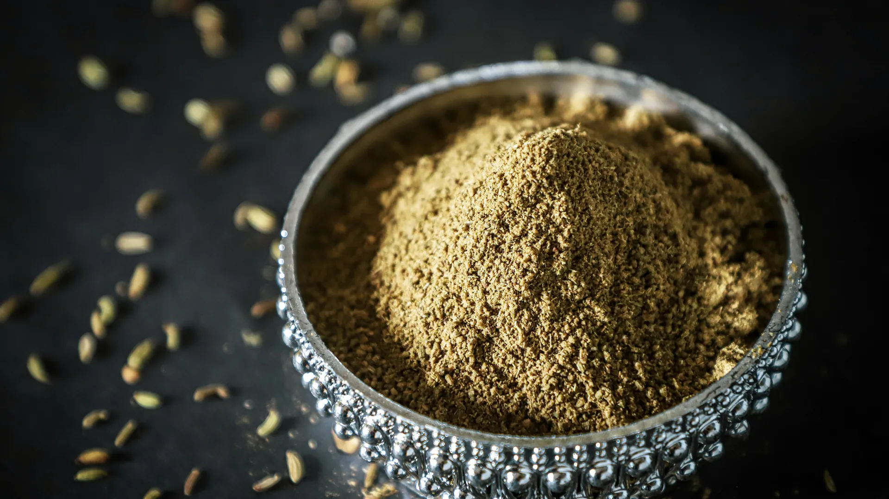
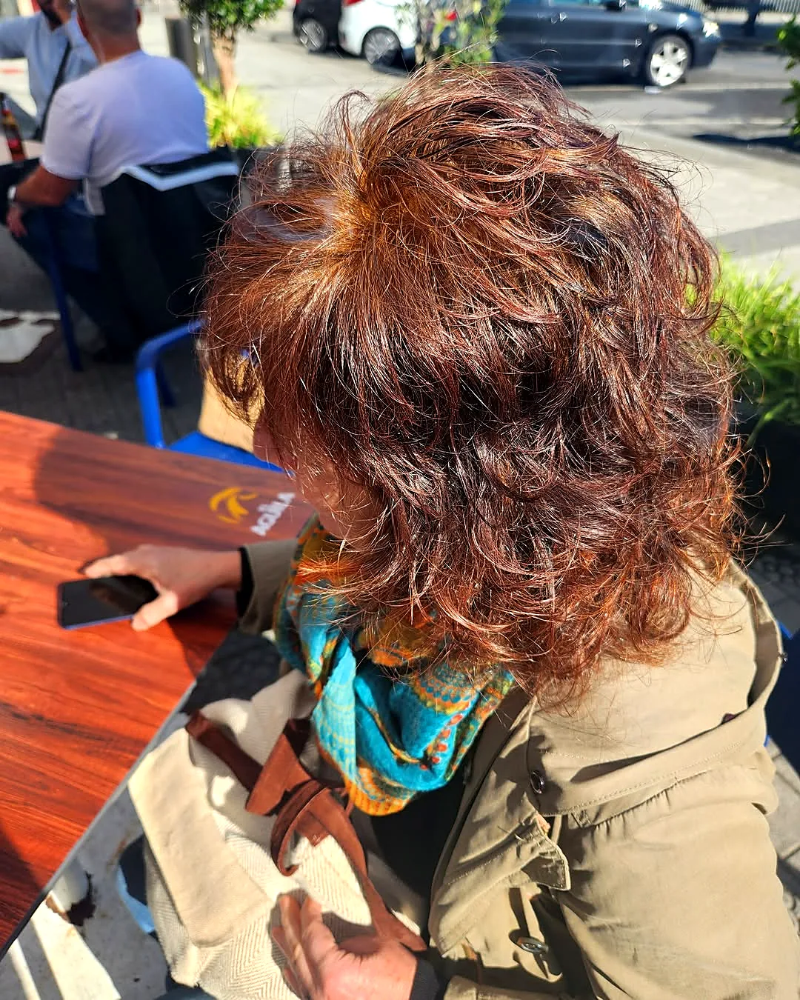
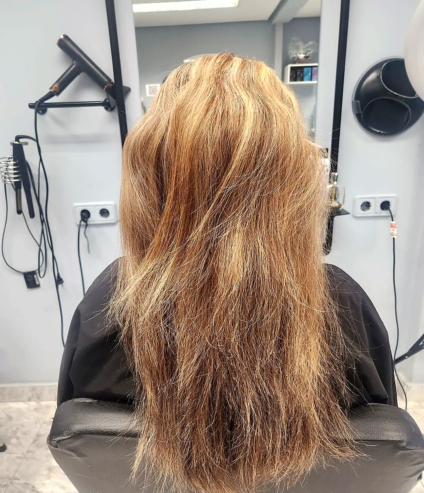

Coloración vegetal completa
Color y cobertura de canas con plantas, con reflejos naturales.
Consultar esta opción
Servicio estrella · Coloración botánica
Coloración 100 % vegetal con henna, índigo, cassia y amla. Sin amoniaco, sin PPD y sin resorcinol. Cubre canas con reflejos naturales y deja un brillo terapéutico.
Peluquería y estilismo
Cada vez más personas buscan alternativas a los tintes químicos tradicionales. En La Pelu de Tod@s trabajamos con coloración 100 % vegetal, elaborada con mezclas de plantas como la henna, el índigo, la cassia o el amla, entre otras. Solo agua y polvo de plantas para conseguir tonalidades únicas.
La coloración vegetal no penetra en el cabello: lo envuelve, creando una capa de color que protege y fortalece la fibra capilar. El resultado son tonos naturales, reflejos luminosos y una melena más sana, densa, fuerte y brillante con cada aplicación. No solo tiñe: también trata y protege.
Es el servicio perfecto para cueros cabelludos sensibles, personas alérgicas a los tintes convencionales o quien simplemente quiere cuidar su cabello, su salud y el medio ambiente. Y lo complementamos con cosmética natural: aceites puros, mascarillas sin siliconas y ampollas naturales.
La coloración vegetal no solo tiñe: también trata y protege. Con cada aplicación, tu pelo está más fuerte.

«Nunca había sentido mi pelo tan sano después de teñirme. Gracias por cuidarme tanto.»
Por qué elegirlo
No contiene amoniaco, PPD ni resorcinol.
Envuelve el cabello y lo protege, en lugar de dañarlo.
Más densidad, cuerpo y un brillo espectacular.
Ideal para pieles sensibles, picores o alergias.
Con reflejos que se integran con tu tono base.
Ingredientes naturales y una rutina más sostenible.
¿Es para mí?
Paso a paso
Vemos tu base, tus canas y si hay restos de tinte químico, para asegurar compatibilidad.
Combinamos henna, índigo, cassia o amla según el tono deseado.
Mechón a mechón, como una mascarilla, sobre el cabello limpio.
El tiempo también decide el tono. Mientras actúa puedes relajarte con presoterapia.
Te explicamos cómo cuidarlo las primeras 48 horas, cuando el color sigue oxidando.
Elige
Cada opción tiene su botón: te abre WhatsApp con el mensaje escrito para que Cova te informe de precio y disponibilidad.
Color y cobertura de canas con plantas, con reflejos naturales.
Consultar esta opciónMantenimiento cada 4–8 semanas reforzando la fibra.
Consultar esta opciónLuz y brillo 100 % natural, sin químicos agresivos.
Consultar esta opciónAceites puros, mascarillas sin siliconas y ampollas naturales.
Consultar esta opciónTe acompañamos para pasar al color vegetal de forma segura.
Consultar esta opciónHecho en La Pelu
Fotos de clientas y clientes de Cova publicadas en @lapeludet2. Pulsa para ampliar.
Consejos de Cova
Evita lavar el cabello durante las primeras 48 horas: los pigmentos se asientan y el color se intensifica.
Usa champús suaves, sin sulfatos ni siliconas, para conservar el color y no resecar.
Aplica mascarillas naturales o aceites vegetales (coco, argán, jojoba) para nutrir sin alterar el tono.
Protege la melena del sol y del cloro: pueden aclarar el color vegetal antes de tiempo.
Retoca cada 4–8 semanas según tu cabello y tu tono, reforzando la fibra en cada visita.

Sin humo
Mito«La coloración con plantas no cubre las canas.»
RealidadFalso. Las canas se cubren, con un resultado más natural: reflejos que se integran con tu tono base.
Mito«No se pueden conseguir tonos diferentes.»
RealidadTambién falso. Aunque no aclara tu color natural, permite una amplia gama de tonos según la mezcla y el tiempo de exposición.
Mito«El pelo queda seco.»
RealidadTodo lo contrario: las plantas fortalecen y aportan brillo, dejando el cabello más denso y saludable.
Mito«No se puede volver al tinte químico.»
RealidadEn realidad sí, pero conviene esperar un tiempo y hacer un diagnóstico previo para asegurar compatibilidad.
Dudas frecuentes
¿No encuentras tu respuesta? Escríbenos y te contestamos encantadas.
Preguntar por WhatsAppMezclas de plantas como henna, índigo, cassia y amla, entre otras, preparadas solo con agua.
Sí. El resultado es más natural que un tinte: las canas se convierten en reflejos que se integran con tu base.
No: la coloración vegetal no aclara tu color natural. Sí permite muchos tonos y matices sobre tu base.
Porque el color vegetal sigue oxidando durante ese tiempo; así el tono se fija y se intensifica.
Lo ideal es cada 4–8 semanas, según tu cabello y tu tono.
Sí, con diagnóstico previo para asegurar compatibilidad y planificar la transición.
Es la opción recomendada para cueros cabelludos sensibles y alergias a tintes convencionales. Si tienes alergias conocidas, cuéntanoslo antes.
Sí, mientras actúa el color puedes disfrutar de una sesión por solo 5 € más.
Reserva
Ya hemos elegido «Coloración vegetal con plantas y barros» por ti en el formulario. Martes a viernes de 9:30 a 18:00 en horario continuo. Sábados de 9:00 a 14:00, solo con cita previa.
Consultando horario…
Combina bien con
 Peluquería y estilismo
Coloración y cobertura de canas
Tintes, matices, color exprés y bonos
Descubrir
Peluquería y estilismo
Coloración y cobertura de canas
Tintes, matices, color exprés y bonos
Descubrir
 Peluquería y estilismo
Tratamientos de nutrición e hidratación
Recuperación profunda de la melena
Descubrir
Peluquería y estilismo
Tratamientos de nutrición e hidratación
Recuperación profunda de la melena
Descubrir
 Terapias capilares
Diagnóstico capilar personalizado
Analizamos hebra y cuero cabelludo
Descubrir
Terapias capilares
Diagnóstico capilar personalizado
Analizamos hebra y cuero cabelludo
Descubrir
Escríbenos por WhatsApp y te respondemos en cuanto terminemos con la clienta que está en el sillón.